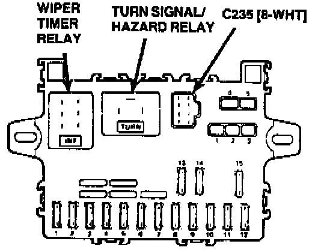

Operation CHARM
: Car repair manuals for everyone.
Home
>>
Acura
>>
1989
>>
Integra L4-1590cc 1.6L DOHC FI
>>
Repair and Diagnosis
>>
Lighting and Horns
>>
Hazard Warning Lamps
>>
Hazard Warning Flasher
>>
Locations
Hazard Warning Flasher: Locations

Hazard:
On Dash Fuse Box, Under LH Side Of Dash Panel